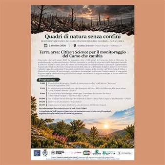

ven 2 ott
Terra arsa: citizen science per il monitoraggio del Carso che cambia
Il 2 ottobre prossimo si terrà nell'aula magna dell'Istituto agrario Brignoli di Gradisca d'Isonzo, nella cornice festosa dell'inaugurazione del nuovo anno scolastico nella sua sede storica recentemente riaperta, la presentazione di un'attività di monitoraggio che riguarderà la…
 Indicazioni
Indicazioni
- Costi e prenotazioni
- Costo non indicato · Prenotazione non indicata
- Programma
- Programma da verificare. Apri la fonte ufficiale per orari e possibili aggiornamenti.
- In caso di maltempo
- Nessuna indicazione specifica pubblicata.
- Note
- Acquisito automaticamente dalla fonte.
L’EVENTO
Descrizione completa
aula magna dell'Istituto agrario Brignoli di Gradisca d'Isonzo
, nella cornice festosa dell'inaugurazione del nuovo anno scolastico nella sua sede storica recentemente riaperta, la presentazione di un'attività di monitoraggio che riguarderà la vegetazione del Carso isontino e sloveno dopo i roghi del 2022. L'incontro sarà ospitato dall'istituto agrario vista la stretta collaborazione instauratasi negli anni con Legambiente sui temi della sostenibilità ambientale ed è uno degli ultimi appuntamenti di "Quadri di natura senza confini", progetto regionale di divulgazione scientifica sulla
BIODIVERSITÀ BOTANICA NELL'AREA TRANSFRONTALIERA DI GORIZIA - NOVA GORICA
a cui aderiscono partner di rilievo come l'Università degli studi di Udine, il Comune di Gorizia, l'ISIS Brignoli, la comunità terapeutica La Tempesta, coordinati da Legambiente FVG.
è un titolo che va dritto al cuore perché l'incendio, che nell'estate 2022 ha devastato oltre 4.000 ettari di Carso tra Italia e Slovenia, ha profondamente trasformato boschi e habitat, causando la perdita di circa metà della biomassa forestale. A distanza di pochi anni, però, la natura sta mostrando una sorprendente capacità di rigenerazione. Accanto alla rinascita del bosco emergono nuove sfide, tra cui la diffusione di specie aliene invasive come l'ailanto (Ailanthus altissima). L'incontro presenterà i risultati delle ricerche dell'Università di Udine e illustrerà un progetto di monitoraggio partecipato, pensato per supportare l'osservazione e la mappatura di questa specie mediante le segnalazioni sul campo, che saranno in seguito usate per le analisi satellitari e rilievi con droni.
IL PROGRAMMA
Programma e orari
Appuntamenti raccolti dalle fonti elencate. Dove manca un orario, non è ancora disponibile in questa scheda.
Programma pubblicato
- 9.00 | Presentazione del progetto “Quadri di natura senza confini” e dell’attività “Terra arsa” a cura di Legambiente FVG.
- 9.10 / La valutazione post-incendio con telerilevamento del Carso 2022 e la diffusione delle specie aliene - prof. Francesco Boscutti - UNIUD
- 9:40 | Citizen science e monitoraggio tramite app: il contributo dei cittadini alla ricerca – dott.ri Paolo Cingano e Sara Pischedda – UNIUD
- 10.00 | Test in campo sull’uso dell’app e del protocollo di rilievo – dott.ri Paolo Cingano e Sara Pischedda – UNIUD
- 10:20 / Interventi dei partecipanti e degli studenti
- 10:30 / Conclusioni e ricadute didattiche a cura dei docenti dell’Istituto Brignoli
INFORMAZIONI UTILI
Prima di partire
- Controllare la fonte prima di partire.
ORGANIZZAZIONE